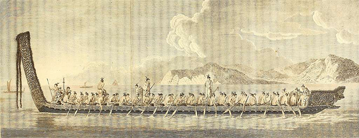

Voyage from Hawaiki to New Zealand
Maori first arrived in New Zealand between 1250 and 1300 where they had navigated by star patterns and ocean currents to traverse the sea. They travelled using Waka (image below) that could carry as many as 12 up to 100 people depending on the size.
CC-BY-SA 3.0. https://handwiki.org/wiki/index.php?curid=1718020